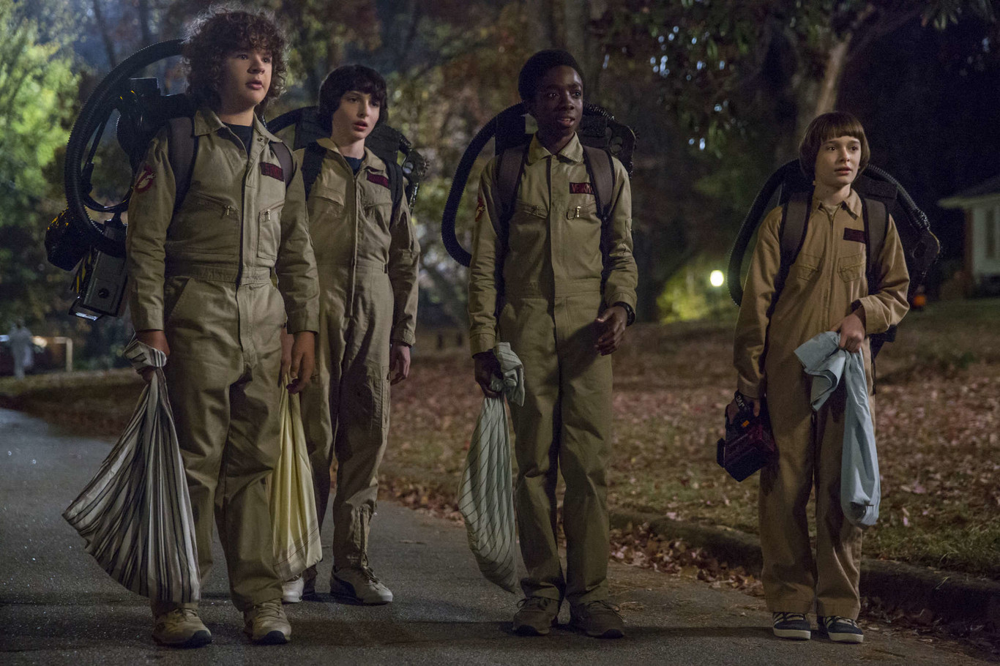
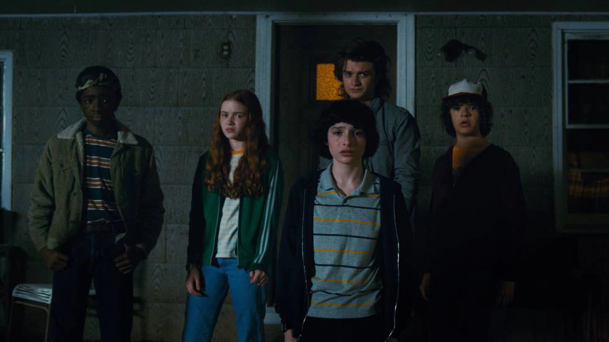
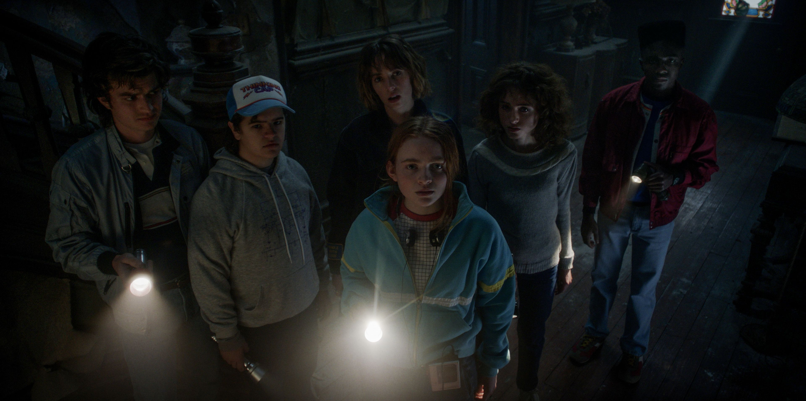

Temporada 2
- Will está vivo e intenta superar los traumas del año pasado:
La segunda entrega se desarrolla en 1984, meses después de los eventos de la temporada debut. Will Byers regresó a casa y busca retomar su vida normal. Pero eso no será posible porque aún hay una conexión con el Upside Down la cual parece imposible de romper.
- El resto del equipo y su vida post–Eleven:
Después de haber derrotado al Demogorgon gracias al sacrificio de Eleven, Mike no puede superar el hecho y sigue extrañando/enamorado de la chica que conoció meses atrás. Lucas parece que es el que mejor ha dejado atrás todo lo sucedido e intenta enfocarse en ser cool y conquistar a la nueva chica que llegó a la ciudad, Max.
Mientras, Dustin intenta competir con su amigo por el amor/atención de la nueva chica, pero no lo logra y por circunstancias extrañas comienza un bromance con Steve, el villano adolescente de la primera temporada, quien se vuelve su mentor, su niñero y uno de los mejores personajes de la temporada.
- Una extraña relación entre Joyce y Hopper:
Después de haber comenzado una mala relación cuando Will desapareció, Joyce y Hopper se hicieron más cercanos al descubrir todos los secretos que había en Hawkins que te trasladaban al Upside Down. Su lucha por salvar al pequeño Byers los unió y se hicieron dos amigos muy cercanos.
Pero mientras Joyce pudo rehacer su vida amorosa a lado de Bob Newby, Hopper tenía que aguantar su falta de agallas para confesarle su amor. Pero este no es el único secreto de Hopper: se ha hecho cargo de Eleven como su propia hija; cuando ella logró salir del Upside Down fue Hopper quien se encontró con ella y la escondió en el medio del bosque para su bien y para el bien de los demás.
- El triángulo de amor joven:
Aunque Nancy sabe que está enamorada de Jonathan, ella sigue con Steve, quien después de lo vivido parece más consciente y más maduro. Tanto es así que, como ya dijimos, será clave en su relación con Dustin, lo cual se traducirá en cariño por los fans.
La incomodidad de ella hacia su relación y la culpa por la muerte de Barb la llevarán de nuevo a conectarse con el hijo mayor de los Byers y vivir su tórrido romance.
- Comienzan a surgir cosas extrañas:
Como ya lo decíamos, Will sigue teniendo una conexión con el Upside Down, pero ahora el monstruo que lo persigue es mucho más grande y está disperso por toda la ciudad. De manera telepática Will tiene su conexión al otro lado donde el Mind Flayer lo posee, pero a la vez le da la habilidad de saber todo lo que él piensa. Así es como descubren que los hay túneles debajo de Hawkins que llevan rumbo al portal del Upside Down.
Dustin se encuentra con una criatura extraña a la cual nombra Dart, y pese a que tiene miedo de su origen, se encariña rápidamente, pero después se da cuenta que es un pequeño Demogorgon.
Por su parte, Eleven quiere volver, pero no se le permite. Así que su encierro la llevará a cuestionarse su origen. Emprenderá una aventura para conocer a su madre y todo lo que pasó en el Laboratorio Nacional de Hawkins.
- Es tiempo de acabar con el Upside Down:
Después que Joyce, Hopper, Bob, Mike y Will han encontrado la ruta al Upside Down se disponen a acabar con todo, pero se dan cuenta que cada vez que le hacen daño a los caminos y portales por donde se transportan los Demodogs también le hacen daño a Will. El único camino es cerrar el portal de raíz, y para lograr la misión Bob se sacrifica en una misión peligrosa que lo lleva hasta la muerte en un punto que creíamos se había salvado pero no.
Por su parte, Dustin y Steve comienzan la caza de Dart, a la cual se suman Lucas y Max. Ella se entera de todo lo que está pasando y sin miedo se enfrenta a lo desconocido con sus nuevos amigos.
- El regreso de Eleven:
Eleven aparece de nuevo en la vida de sus amigos y de su amor Mike, con cabello y con un estilo dark después de haber conocido a su hermana, Eight, una chica con poderes similares a los de ella y que también fue criada por el Dr. Martin Brenner. Pero su paseo no importa mucho, lo que importa es su regreso que da esperanza al grupo que no sabe cómo va a acabar con el Mind Flayer antes que él acabe con ellos.
- Divide y vencerás:
Los Byers, con ayuda de Nancy, tendrán que “exorcizar” a Will para que el Mind Flayer deje el cuerpo del pequeño y para que sea momento que Eleven use sus poderes para cerrar el portal estando frente a frente a él. Todo esto con ayuda de Hopper, su padre. Pero para entrar al portal, ellos fueron ayudados por los demás chicos que comenzaron a quemar los túneles para distraer a los Demodogs y dejar que su amiga llegara hasta la raíz.
- Every breath you take…:
Después de acabar con las fuerzas extrañas que acechaban Hawkins, los chicos se disponen a retomar su vida como unos pre-adolescentes normales y darle paso al amor. Eleven y Mike, Max y Lucas, Will con una chica desconocida y un Dustin desilusionado por no conquistar a nadie es salvado por Nancy, la hermana de su amigo, quien baila con él.
Mientras ese momento hermoso sucede y el final feliz parece inminente, el Mind Flayer se hace presente de nuevo porque encontró la forma de regresar a Hawkins y tomar venganza contra los chicos.


